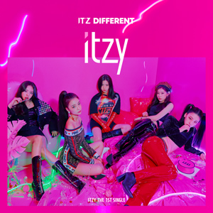

ITZY는 JYP엔터테인먼트가 TWICE 이후로 3년 4개월만에 내놓는 5인조 걸그룹이다.
2019년 1월 21일 0시에 데뷔 티저가 공개되었고, 같은 해 2월 12일에 정식 데뷔하였다.
그룹명은 '있지'라고 읽으며 '너희가 원하는 거 전부 있지? 있지!'라는 뜻을 갖고 있다.
멤버 전원이 2000년대 출생으로, 생년월일로는 예지(2000. 05. 26.), 리아(2000. 07. 21.), 류진(2001. 04. 17.), 채령(2001. 06. 05.), 유나(2003. 12. 09.) 순이다.

공식적으로 '너희가 원하는 거 전부 있지? 있지!'라는 뜻의 ITZY(있지)라는 그룹명은 박진영이 지어준 이름이다. 최근 K-POP 그룹에 외국인 멤버들이 많아지고 있는 추세와 달리 이들은 멤버 전원이 한국인으로 구성되어 있으며, 외국인은 단 한 명도 없다.